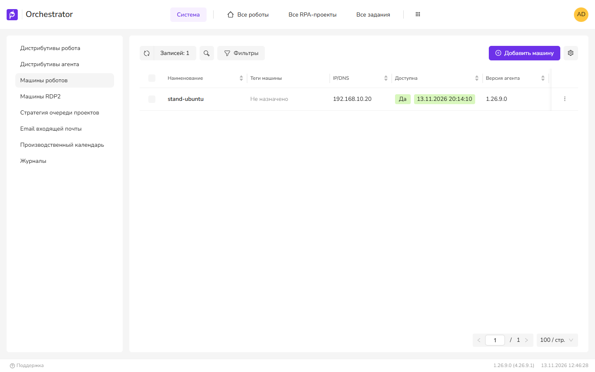
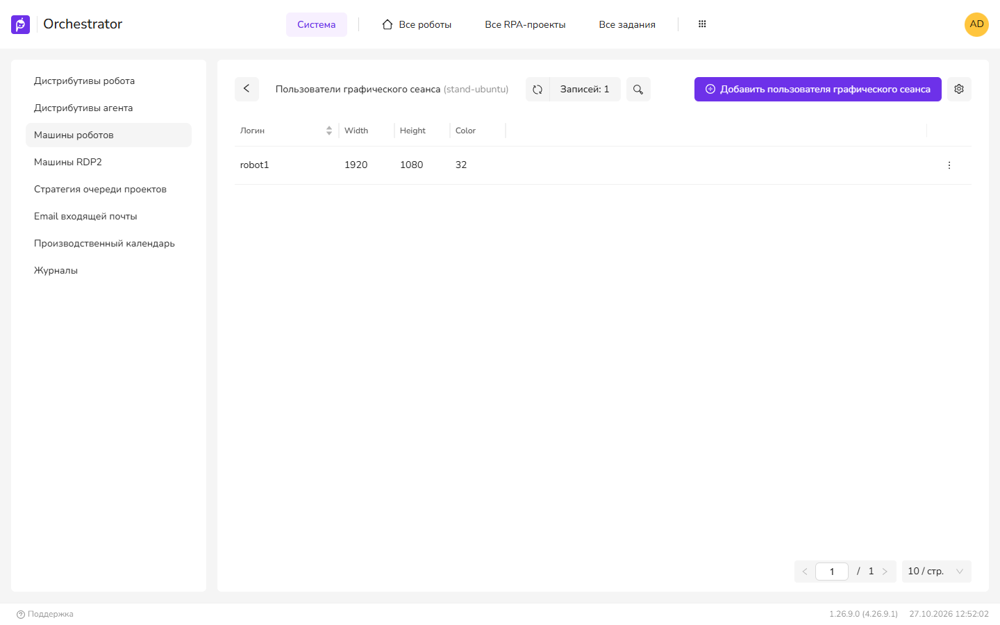

Запуск роботов и RDP-сессии
На странице описаны параметры WebApi, агента и службы RDP2, от которых зависят запуск робота, поддержка RDP-сессии перед стартом, освобождение и разлогинивание сессий, состояние «Недоступен», блокировка робота агентом и трансляция сессии.
Параметры секций RobotStart, RDP и Robot задаются в конфигурации службы WebApi; параметры агента и RDP2 — в отдельных разделах ниже. Файл конфигурации — appsettings.ProdLinux.json (Linux) или appsettings.ProdWin.json (Windows) в каталоге службы. В Docker параметры WebApi — переменные окружения сервиса web-api в docker-compose.yml; уровни имени разделяются двойным подчёркиванием, элемент массива указывается номером: RDP__SessionsReleaseDelay, RobotStart__AttemptsKeepRDPSessionLevels__0__AttempCount. После изменения перезапустите службу; в Docker выполните sudo docker compose up -d. Порядок чтения источников — на странице Параметры конфигурации.
В колонке «По умолчанию» указано значение, которое действует без параметра в конфигурации. В Docker-образе WebApi многие из этих параметров переопределены; существенные отличия указаны.
Поддержка RDP-сессии перед запуском: RobotStart
Если роботу требуется RDP-сессия, перед стартом Оркестратор запрашивает её открытие и повторяет попытки по уровням. Уровни идут по порядку: исчерпаны попытки уровня — переход к следующему.
| Параметр | Назначение | По умолчанию |
|---|---|---|
RobotStart:AttemptsKeepRDPSessionLevels[] | Массив уровней. В каждом: AttempCount — попыток на уровне, AttempExpirationInSeconds — пауза между попытками, с. Задержка следующего уровня должна быть больше предыдущей | массив не задан; у элемента 3 и 5. В Docker-образе три уровня: 3×3 с, 3×5 с, 3×10 с |
RobotStart:WaitUserProfileLoaded | Ждать загрузки профиля RDP-пользователя | false |
RobotStart:ReEnqueueNoRdpOrProfile | Если сессия не открыта или профиль не загрузился — вернуть запуск в очередь проектов | false |
RobotStart:IntervalForReleaseInSeconds | Если робот не ответил за это время, считается, что он не запустился, и лицензия освобождается | 300 (в Docker 120) |
RobotStart:DisableReleaseRdpSessionTimeOut | Не отключать RDP-сессию при освобождении лицензии по таймауту | false |
RobotStart:TimeOutInMinutesForUnlock | Через сколько минут с робота снимается блокировка | 5 (в Docker 2) |
RobotStart:AgentHttpClientTimeoutInSec | Таймаут части запросов WebApi к агенту, с | 10 |
У RobotStart:AttemptsKeepRDPSessionLevels нет значения по умолчанию. Если массив не задан, запуск роботов с RDP-сессией завершается ошибкой.


Освобождение и разлогинивание сессий: RDP
| Параметр | Назначение | По умолчанию |
|---|---|---|
RDP:SessionsReleaseDelay | Задержка отключения сессии, мс: сессия может сразу понадобиться другому роботу. Только при ExclusiveSessionsRelease=false | 0 (в Docker 5000) |
RDP:ExclusiveSessionsRelease | Робот отключает сессию, не дожидаясь других роботов в ней | false |
RDP:SessionsReleaseThreadSleep | Период потока отключения сессий, мс | 1000 |
RDP:EnabledLogOffDisconnectedRDPUsers | Разлогинивать отключённых RDP-пользователей | разлогинивание включается, только если в конфигурации явно задано true (в Docker True) |
RDP:LogOffDisconnectedRDPUsersService | Алгоритм разлогинивания: 0 — прежний, 1 — новый | без ключа в конфигурации — 0 (в Docker 0) |
RDP:LogOffDisconnectedRDPUsersAsync | Асинхронное разлогинивание (для алгоритма 0) | false |
RDP:LogOffDisconnectedRDPUsersThreadSleep | Период потока разлогинивания, мс | 1000 |
RDP:MaxAttemptStartLogOff / MaxAttemptLogOff | Попыток отправить команду разлогина агенту / выполнить разлогин. После исчерпания сессия остаётся отключённой | 10 / 10 |
RDP:LogOffTimeOutInMinute | Через сколько минут повторить команду разлогина, если прошлая не завершилась | 2 (в Docker 5) |
RDP:LostConnectTimeout | Через сколько секунд без обновления состояния соединение считается потерянным | 5 (в Docker 10) |
RDP:RDPSessionsReleaseService | Алгоритм освобождения сессий: 0 — прежний, 1 — новый | 0 |
RDP:MaxConnectedFlickersCount | Сколько переключений подряд дают признак «мерцания» сессии (виджет Мерцающие RDP-сессии на главной странице) | 3 |
RDP:ConnectedFlickersInterval | Интервал переключения, который считается кандидатом на мерцание, мс | 10000 (в Docker 6000) |
RDP:ResetConnectedFlickersIntervalFactor | Множитель интервала: если за интервал × множитель переключений не было, признак сбрасывается | 3 |
Если запаса RDP-лицензий нет, а роботы в одной сессии не стартуют сразу друг за другом, задайте SessionsReleaseDelay=0. Если стартуют подряд — ExclusiveSessionsRelease=true.
Состояние «Недоступен» и блокировка робота агентом
| Параметр | Назначение | По умолчанию |
|---|---|---|
Robot:RunStatusTimeout | Через сколько секунд без обновления статуса робот получает состояние «Недоступен» | 30 (в Docker 11) |
RobotStart:UseAgentLock | Перед запуском запрашивать у агента блокировку робота файлом блокировки. Блокировка отклоняется, если файл остался или процесс робота не завершён | true |
Robot:VersionForAgentLock | Версия робота, с которой работает блокировка агентом | 1.1.30.2 |
Robot:VersionForAgentCollectRobotStatus | Версия робота, с которой статусы собирает агент | 1.1.30.2 |
Robot:CollectRobotStatusService | Алгоритм сбора статусов роботов: 0 — прежний, 1 — новый | 0 (в Docker 1) |
На стороне агента файлы блокировки находятся в папке <Agent:DataPath>/<Robot:LocksDir> (по умолчанию подпапка RobotLocks). Агент создаёт её и очищает при старте. RDP-пользователям роботов требуются полные права на эту папку.
Агент: что ещё влияет на запуск
Параметры задаются на машине робота в файле конфигурации агента: /opt/Primo/Agent/appsettings.ProdLinux.json (Linux) или appsettings.ProdWin.json в каталоге агента (Windows). После изменения перезапустите агент. Установка агента — на странице Машины роботов и агент.
| Параметр (конфиг агента) | Назначение | По умолчанию |
|---|---|---|
Agent:DataPath | Папка данных агента: блокировки, дистрибутивы робота, архивы скриншотов | — |
Agent:ProjectZipEncoding | Кодировка имён файлов в архиве проекта | пусто |
Orchestrator:BaseUrl | Адрес Оркестратора для агента. Пусто — берётся из заголовка запросов Оркестратора | пусто |
StartRobot:UseHighestTaskRunLevel | Флаг «Run with highest privileges» в задании планировщика Windows | true |
StartRobot:WindowsTaskMaxRetry | Попыток запустить задание планировщика при ошибке | 10 |
Порт, по которому WebApi обращается к агенту, задаётся в Tenants:Agent:Port (по умолчанию 5002), см. Вход и доступ.
Трансляция RDP-сессии: служба RDP2
WebApi передаёт браузеру адрес трансляции из своих параметров, а служба RDP2 поддерживает сессии назначенных ей машин. Служба, в конфигурации которой задаётся параметр, указана в колонке «Где». RDP2 в Docker-поставку не входит: её параметры задаются в файле appsettings.ProdLinux.json или appsettings.ProdWin.json в каталоге службы RDP2, после изменения служба перезапускается.
| Параметр | Где | Назначение | По умолчанию |
|---|---|---|---|
RDP:RdpBaseUrl | WebApi | Внешний адрес (точка nginx) единственной службы RDP2. Для случая без AddressFilter | — |
RDP:RdpBaseUrls | WebApi | Словарь «адрес машины робота (поле IP/DNS) → внешний адрес RDP2, которая обслуживает эту машину» для нескольких служб RDP2 с AddressFilter | — |
Orchestrator:BaseUrl | RDP2 | Адрес WebApi | — |
AddressFilter | RDP2 | Какие машины обслуживает этот экземпляр. Наборы машин у экземпляров не должны пересекаться | пусто — все |
Host | RDP2 | Внутренний IP сервера RDP2. Не задан — определяется WebApi по запросу, что не всегда даёт верный результат | пусто |
EnabledOrigins | RDP2 | Внешний адрес Оркестратора для CORS. Без него трансляция в браузере не отображается | — |
MaxSessionsLimit, RdpClientConnectionUpdateInterval | RDP2 | Лимит сессий и интервал обновления подключения | 0 |
UsersListInclude, UsersListExclude, OnlyEvenOddUsersIds | RDP2 | Фильтры пользователей, сессии которых обслуживает экземпляр | пусто |
Mqtt:Url, Username, Password | WebApi и RDP2 | Если Mqtt:Url задан, WebApi и RDP2 обмениваются сообщениями через MQTT; иначе RDP2 работает с WebApi по REST. Режим необязательный, задавать параметр не требуется | пусто → REST |
Машины, обслуживаемые экземплярами RDP2, видны в UI4: Настройки → Система → Машины RDP2.
Пример
Фрагмент файла конфигурации WebApi; секции добавляются к имеющимся в файле.
{
"RobotStart": {
"AttemptsKeepRDPSessionLevels": [
{ "AttempCount": 3, "AttempExpirationInSeconds": 3 },
{ "AttempCount": 3, "AttempExpirationInSeconds": 5 },
{ "AttempCount": 3, "AttempExpirationInSeconds": 10 }
],
"WaitUserProfileLoaded": false,
"UseAgentLock": true
},
"RDP": {
"SessionsReleaseDelay": 0,
"ExclusiveSessionsRelease": false,
"EnabledLogOffDisconnectedRDPUsers": true,
"RdpBaseUrl": "https://orch.example.local:44392/rdpstream"
},
"Robot": { "RunStatusTimeout": 30 }
}В Docker те же параметры — переменные окружения сервиса web-api, например:
RobotStart__AttemptsKeepRDPSessionLevels__0__AttempCount: 3
RobotStart__AttemptsKeepRDPSessionLevels__0__AttempExpirationInSeconds: 3
RDP__SessionsReleaseDelay: 0
RDP__RdpBaseUrl: https://orch.example.local:44392/rdpstream
Robot__RunStatusTimeout: 30Как проверить
- Запустите робота, которому нужна RDP-сессия. Сессия открылась, робот перешёл в «Выполняется». В журнале Журналы → События оркестратора нет ошибок открытия сессии.
- Остановите агент на машине и подождите
Robot:RunStatusTimeoutсекунд. Роботы машины в состоянии «Недоступен». - Откройте трансляцию сессии робота. Изображение передаётся; если нет — проверьте
RDP:RdpBaseUrlв WebApi,EnabledOriginsв RDP2 и проксирование/rdpstream/в nginx. В поставочных конфигурациях nginx для этого пути включена поддержка WebSocket.